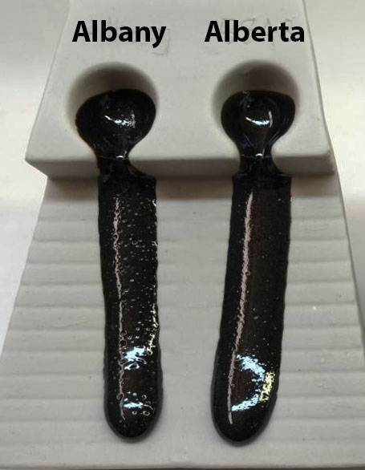
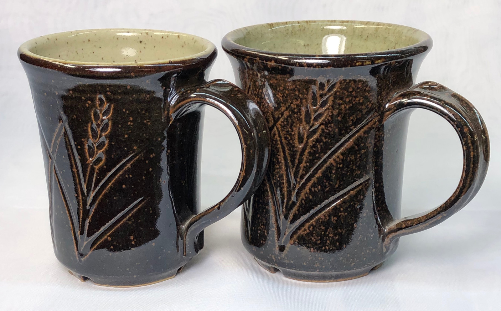
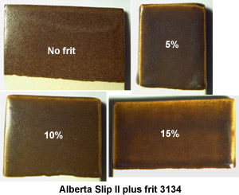
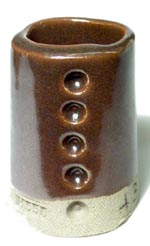
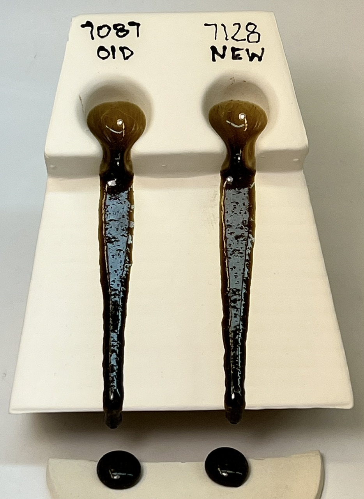

A Low Cost Tester of Glaze Melt Fluidity
A One-speed Lab or Studio Slurry Mixer
A Textbook Cone 6 Matte Glaze With Problems
Adjusting Glaze Expansion by Calculation to Solve Shivering
Alberta Slip, 20 Years of Substitution for Albany Slip
An Overview of Ceramic Stains
Are You in Control of Your Production Process?
Are Your Glazes Food Safe or are They Leachable?
Attack on Glass: Corrosion Attack Mechanisms
Ball Milling Glazes, Bodies, Engobes
Binders for Ceramic Bodies
Bringing Out the Big Guns in Craze Control: MgO (G1215U)
Can We Help You Fix a Specific Problem?
Ceramic Glazes Today
Ceramic Material Nomenclature
Ceramic Tile Clay Body Formulation
Changing Our View of Glazes
Chemistry vs. Matrix Blending to Create Glazes from Native Materials
Concentrate on One Good Glaze
Copper Red Glazes
Crazing and Bacteria: Is There a Hazard?
Crazing in Stoneware Glazes: Treating the Causes, Not the Symptoms
Creating a Non-Glaze Ceramic Slip or Engobe
Creating Your Own Budget Glaze
Crystal Glazes: Understanding the Process and Materials
Deflocculants: A Detailed Overview
Demonstrating Glaze Fit Issues to Students
Diagnosing a Casting Problem at a Sanitaryware Plant
Drying Ceramics Without Cracks
Duplicating AP Green Fireclay
Electric Hobby Kilns: What You Need to Know
Fighting the Glaze Dragon
Firing Clay Test Bars
Firing: What Happens to Ceramic Ware in a Firing Kiln
First You See It Then You Don't: Raku Glaze Stability
Fixing a glaze that does not stay in suspension
Formulating a body using clays native to your area
Formulating a Clear Glaze Compatible with Chrome-Tin Stains
Formulating a Porcelain
Formulating Ash and Native-Material Glazes
G1214M Cone 5-7 20x5 glossy transparent glaze
G1214W Cone 6 transparent glaze
G1214Z Cone 6 matte glaze
G1916M Cone 06-04 transparent glaze
Getting the Glaze Color You Want: Working With Stains
Glaze and Body Pigments and Stains in the Ceramic Tile Industry
Glaze Chemistry Basics - Formula, Analysis, Mole%, Unity
Glaze chemistry using a frit of approximate analysis
Glaze Recipes: Formulate and Make Your Own Instead
Glaze Types, Formulation and Application in the Tile Industry
Having Your Glaze Tested for Toxic Metal Release
High Gloss Glazes
Hire Us for a 3D Printing Project
How a Material Chemical Analysis is Done
How desktop INSIGHT Deals With Unity, LOI and Formula Weight
How to Find and Test Your Own Native Clays
I have always done it this way!
Inkjet Decoration of Ceramic Tiles
Is Your Fired Ware Safe?
Leaching Cone 6 Glaze Case Study
Limit Formulas and Target Formulas
Low Budget Testing of Ceramic Glazes
Make Your Own Ball Mill Stand
Making Glaze Testing Cones
Monoporosa or Single Fired Wall Tiles
Organic Matter in Clays: Detailed Overview
Outdoor Weather Resistant Ceramics
Painting Glazes Rather Than Dipping or Spraying
Particle Size Distribution of Ceramic Powders
Porcelain Tile, Vitrified Tile
Rationalizing Conflicting Opinions About Plasticity
Ravenscrag Slip is Born
Recylcing Scrap Clay
Reducing the Firing Temperature of a Glaze From Cone 10 to 6
Setting up a Clay Testing Program in Your Company or Studio
Simple Physical Testing of Clays
Single Fire Glazing
Soluble Salts in Minerals: Detailed Overview
Some Keys to Dealing With Firing Cracks
Stoneware Casting Body Recipes
Substituting Cornwall Stone
Super-Refined Terra Sigillata
The Chemistry, Physics and Manufacturing of Glaze Frits
The Effect of Glaze Fit on Fired Ware Strength
The Four Levels on Which to View Ceramic Glazes
The Majolica Earthenware Process
The Potter's Prayer
The Right Chemistry for a Cone 6 Magnesia Matte
The Trials of Being the Only Technical Person in the Club
The Whining Stops Here: A Realistic Look at Clay Bodies
Those Unlabelled Bags and Buckets
Tiles and Mosaics for Potters
Toxicity of Firebricks Used in Ovens
Trafficking in Glaze Recipes
Understanding Ceramic Materials
Understanding Ceramic Oxides
Understanding Glaze Slurry Properties
Understanding the Deflocculation Process in Slip Casting
Understanding the Terra Cotta Slip Casting Recipes In North America
Understanding Thermal Expansion in Ceramic Glazes
Unwanted Crystallization in a Cone 6 Glaze
Using Dextrin, Glycerine and CMC Gum together
Volcanic Ash
What Determines a Glaze's Firing Temperature?
What is a Mole, Checking Out the Mole
What is the Glaze Dragon?
Where do I start in understanding glazes?
Why Textbook Glazes Are So Difficult
Working with children
Duplicating Albany Slip
Description
How Alberta Slip was created by analysing and duplicating the physical and chemical properties of Albany Slip
Article
Albany slip has long been a "standard" within the North American pottery community. It has proven invaluable for the production of craze-free earth tone glazes, and many potteries use some in most of their glaze formulas. In the late 1980's after increasing difficulties in mining the product, the Hamill and Gillespie Co. discontinued it. Many companies have been working on a substitute, with limited success.
As luck would have it, I had access to a material called "Redearth", which burns somewhat similar to Albany slip. The task seemed to be to calculate the recipe of ceramic minerals that when combined with Redearth would chemically duplicate Albany slip. The result turned out to be "Alberta Slip".
I came to recognize early that there are some limiting factors to consider to maintain a realistic view of calculation and make the best use of the information it provides:
- It is important to have a "representative sample" of any native materials used in development, so that testing work can later be reproduced in production. Obtaining a proper specimen is usually a matter of sampling a stockpile in many places.
- It is important to have a "reliable analysis" of the "representative sample". Make sure that a lab with applicable experience does the tests, or have them do it twice to verify. If possible, calculate your own percent weight loss on ignition (LOI) by weighing a bone dry sample, firing to cone 02, and weighing again. If the lab's percentage plus your LOI figure do not total somewhere between 98 and 102, then find out why. They may tell you to adjust the LOI or SiO2 , retotal, or they may repeat it.
Here is Redearth and Albany calculated alone after adding the former to INSIGHT's materials database.
| REDEARTH | ALBANY | |||||
|---|---|---|---|---|---|---|
| *CaO | .08 | .50% | *CaO | .40 | 5.86% | |
| *MgO | .26 | 1.14% | *MgO | .25 | 2.65% | |
| *K2O | .32 | 3.29% | *K2O | .13 | 3.29% | |
| *Na2O | .11 | .73% | *Na2O | .11 | 1.83% | |
| *Fe2O3 | .22 | 3.84% | *Fe2O3 | .11 | 4.67% | |
| TiO2 | .07 | .63% | Al2O3 | .55 | 14.82% | |
| Al2O3 | 1.34 | 14.76% | SiO2 | 3.69 | 58.47% | |
| SiO2 | 10.73 | 69.41% | L.O.I. | 8.40% | ||
| L.O.I. | 5.70% | |||||
| RATIO | 7.99 | RATIO | 6.71 | |||
| WEIGHT | 927.74 | WEIGHT | 378.93 | |||
I have set unity with the fluxes, since the material will be used in glazes, and will be compared to Albany, which is a flux-dominant material. The LOI figure shown was derived as described above.
Since Albany slip has a reputation for being somewhat inconsistent, obtaining a representative analysis of it proved elusive. I finally decided on an arbitrary textbook analysis. This source did not include a loss on ignition, so it was necessary to fire my own sample in the kiln (yielding an 8.4% figure). I added the Albany formula, with unity set to the fluxes, to the materials definition table in INSIGHT and a standard formula report is shown above beside the Redearth. Notice that this formula does not appear very similar to that of Redearth, but you may be surprised to find out how little material had to be added to convert Redearth to a close chemical duplicate of Albany.
It is important to note that I did not know how well the sample of Albany slip clay I had matched this formula, nor did I know whether this formula could be considered representative of "normal" Albany clay. I was attempting to duplicate Albany clay on two levels, chemically and physically. The first step of the plan was to duplicate it chemically "on paper".
Firing and physical properties tests would indicate further changes necessary to mimic the physical properties (like apparent plasticity, smoothness, dry strength, shrinkage, raw color), firing properties (like shrinkage, absorption, strength, fusibility, melt viscosity), and glazing properties (like its effect on physical viscosity, drying shrinkage, application characteristics, etc.). I could not, however, duplicate the material's mineralogically, that is, produce a substitute that would have the same proportions of the same clay minerals. Mineralogical analyses were not available but this was okay since Albany clay is used mostly in glazes where the kiln fires break down all minerals into their basic oxides.
The next step was to set up the Albany analysis as a reference in the formula window of INSIGHT. I then entered a recipe with 100 Redearth and calculated to compare. It was just a matter of introducing materials to source oxides that are lacking in Redearth, one at a time, until the Albany formula was duplicated using the highest amount of Redearth possible. The process is an oxide juggling act, but one develops an aptitude for it quite quickly. Even by beginner's trial and error, it doesn't take more than a few minutes.
Following is a detail report of the first calculated mix of materials to produce a substitute. Take special note of the "UNITY FORMULA" totals line near the bottom.
Notice that I duplicated the Albany formula goal almost exactly (disregard the second redundant decimal on any numbers).
DETAIL PRINT - ALBERTA SLIP #1 MATERIAL PARTS WEIGHT CaO MgO K2O Na2O Fe2O3 TiO2 Al2O3 SiO2 WEIGHT OF EACH OXIDE 56.1 40.3 94.2 62.0 160.0 79.7 102.0 60.1 -- ------------------------------------------------------------------------------------------ MATERIAL Expan OF EACH OXIDE 0.15 0.03 0.33 0.39 0.13 0.14 0.06 0.04 Cost/kg -------------------------------------------------------------------------------------------- ------- Redearth........... 68.00 936.47 0.01 0.02 0.02 0.01 0.02 0.01 0.10 0.79 0.00 WHITING............ 5.00 100.00 0.05 0.12 DOLOMITE........... 8.75 184.00 0.05 0.05 0.00 NEPHELINE SYENITE.. 13.50 446.40 0.00 0.00 0.01 0.02 0.03 0.14 0.33 KAOLIN............. 3.00 258.14 0.01 0.02 0.24 IRON OXIDE RED..... 1.75 160.00 0.01 2.90 -------------------------------------------------------------------------------------------- ------- TOTAL 100.00 0.11 0.07 0.03 0.03 0.03 0.01 0.14 0.95 0.11 UNITY FORMULA 0.11 0.07 0.03 0.03 0.03 0.01 0.14 0.95 PER CENT BY WEIGHT 6.05 2.77 2.91 1.88 4.44 0.42 14.78 58.36
Cost/kg 0.11 L.O.I. 8.40 Si:Al 6.70 SiB:Al 6.70 Expan 6.82
The next step was to mix a batch of this to compare with pure Albany. I did the comparison by treating each as a glaze and applying it to test tiles at a variety of thicknesses and fired at a range of temperatures. Disappointingly, the substitute had a very coarse and relatively rough surface compared to the smooth and silky nature of the Albany. It seemed obvious then, that the substitute mix needed to be ground to a finer particle size. I milled for an hour, redid the test tiles, and made melt flow tester samples. The substitute fired very close to Albany slip in character, but about 1-2 cones less mature and it was a little lighter in fired color.
The next step was to change the recipe of the substitute in such a way that I did not diverge too much from the target formula, but still moved closer to the physical firing characteristics of Albany. Here is what I decided to do:
- Drop dolomite from the recipe and supply magnesia with talc instead. This would allow the use of more magnesia to achieve better fluxing and retain Albany's low expansion. Had I increased dolomite to source more magnesia, it would have resulted in unwanted extra calcia.
- Drop the Al2O3 slightly to improve maturity and flow.
- Increase the black iron oxide to give more color to the raw material.
ALBERTA SLIP #2
===============
Redearth............ 67.50 67.50%
WHITING............. 9.50 9.50%
TALC................ 7.00 7.00%
NEPHELINE SYENITE... 14.00 14.00%
IRON OXIDE RED...... 2.00 2.00%
========
100.00
CaO 0.10 5.92%
MgO 0.07 3.10%
K2O 0.03 2.92%
Na2O 0.03 1.94%
Fe2O3 0.03 4.69%
TiO2 0.01 0.42%
Al2O3 0.13 13.66%
SiO2 1.00 61.65%
Cost/kg 0.13
L.O.I. 5.70
Si:Al 7.66
SiB:Al 7.66
Expan 6.72
I ended up diverging slightly from the Albany formula goal; however, the mix fired out, in most cases, identical to my Albany slip specimen. On the melt flow tests, the two were identical at cone 9 but at cone 7, the Albany fused slightly better, probably because of a finer particle size.
The final test of compatibility was to put the two materials into a flow tester and a glaze and compare.
I chose a recipe with a high percentage of Albany as follows
GLAZE A GLAZE B BATCH RECIPE BATCH RECIPE ------------ ------------ ALBANY........... 85.0 ALBERTA SLIP..... 85.0 LITHIUM CARBONATE 11.0 LITHIUM CARBONATE 11.0 *TIN OXIDE........ 4.0 *TIN OXIDE........ 4.0 FORMULA & ANALYSIS FORMULA & ANALYSIS ------------------ ------------------- *CaO .24 6.05% *CaO .23 5.86% *Li2O .39 5.31% *Li2O .40 5.38% *MgO .15 2.74% *MgO .17 3.11% *K2O .08 3.41% *K2O .07 3.18% *Na2O .07 1.89% *Na2O .07 1.87% *Fe2O3 .07 4.82% *Fe2O3 .07 4.74% Al2O3 .33 15.33% Al2O3 .30 13.82% SiO2 2.23 60.45% SiO2 2.25 61.60%
RATIO 6.71 RATIO 7.58 EXPAN 6.22 EXPAN 6.47
Following are some encouraging things I found after using these glazes:
- Both shivered on my clay body as evidenced by the fired glaze flaking off at the rims of pottery pieces. Albany is well known as a non-crazing material and this shivering confirms it. Alberta slip shivers at least as much, possibly more. It is very encouraging to see this important property of Albany duplicated.
- Both glazes blistered in some fast firings, so the evolution of gases, glaze melt viscosity, bubble passage characteristics, etc. of the two seem similar.
- The Alberta slip seems to show a little better color when highlighting thin edges on the pieces (e.g. on incised designs).
- Alberta slip is more plastic than Albany and this tends to cause the glaze to crack when it is drying on the piece.
- Alberta slip is not as inherently fine as Albany, and therefore, might require ball milling in many glazes. This does not seem to be the case with highly fluxed glazes, but could be true in others.
Alberta slip tends to flocculate a little when added to a glaze in large amounts, so it is necessary to add some deflocculant to thin it out. Even after the deflocculant was added (I used Allied Colloids #311 sodium polyacrylate dispersant), the glaze tended to gel after sitting for a while but as soon as it was stirred it loosened up and flowed well. This might be an advantage, since it prevents the glaze from settling out and most people would sooner stir a glaze to "loosen it up" rather than try to re-mix one with settled solids.
In general, True Albany seems to fuse a little better at lower temperatures than the current version of Alberta slip, so its glazes flow a little more at cone 5. I attribute this to the fact that Albany is finer. At cone 9 the Alberta slip glaze is actually more fluid, and at cone 7 the difference is very small. Certainly, it is possible to flux Alberta slip to fuse more at lower temperatures (possibly boron for magnesia). The True Albany glaze has a tendency to de-vitrify more than the Alberta slip material. The added CaO was supplied by whiting, but one could easily source it from another material that tends to seed crystals better (e.g. wollastonite). However, this might increase the cost or reduce the amount of Redearth that could be used. One real advantage of Alberta slip is that Redearth deposits of raw clay are extremely large and very consistent. From a purely "visual appeal" point of view, Alberta slip produces a more appealing glaze in my tests.
Alberta Slip is available from plainsmanclays.com.
Related Information
Melt fluidity of Albany Slip vs. Alberta Slip at cone 10R

This picture has its own page with more detail, click here to see it.
This is a GLFL test, it employs a slipcast melt flow tester to show the flow patterns of two glazes (or materials), side-by-side. Albany Slip was a pure mined silty clay that, by itself, melted to a glossy dark brown glaze at cone 10R. By itself it was a Tenmoku glaze at high temperatures. Alberta Slip is a recipe of mined clays with added refined minerals that give it a similar chemistry, firing behavior and raw physical appearance. As you can see, the melt fluidity is very similar.
Alberta Slip as-a-glaze at cone 10R

This picture has its own page with more detail, click here to see it.
This is 100% Alberta Slip (outside) on a buff stoneware (left) and iron stoneware (right) fired to cone 10R. The glaze is made using a blend of roast and raw (as instructed at the PlainsmanClays.com product page). Alberta Slip was originally formulated during the 1980s (using Insight software) as a chemical duplicate of Albany Slip. The inside: G2947U transparent. The intensity of the color depends on firing, add a little iron oxide (e.g. 1%) if needed.

This picture has its own page with more detail, click here to see it.
Alberta slip melts well with very little frit at cone 6
Alberta Slip with 3% iron oxide added. It crystallizes.

This picture has its own page with more detail, click here to see it.
This is fired in cone 10R. The effect becomes more intense by 5%. To achieve this same effect using Ravenscrag, which has much less natural iron content, 10% added iron is needed (which is, of course, much messier to work with).
How runs of Alberta Slip are compared in production testing

This picture has its own page with more detail, click here to see it.
These are two runs of Alberta slip (plus 20% frit 3134) in a GLFL test to compare melt flow at cone 6.
Links
| Materials |
Alberta Slip
Albany Slip successor - a plastic clay that melts to dark brown glossy at cone 10R, with a frit addition it can also host a wide range of glazes at cone 6. |
| Articles |
Formulating Ash and Native-Material Glazes
How to have a volcanic ash analysed and them use ceramic chemistry to create a glaze that contains the maximum possible amount of the ash for the desired effect |
| Articles |
Alberta Slip, 20 Years of Substitution for Albany Slip
Alberta Slip makes a great base for glazes because not only is it almost a complete glaze by itself but it has low thermal expansion, it works well with frits and slurry properties can be adjusted. |
| Articles |
Ravenscrag Slip is Born
The story of how Ravenscrag Slip was discovered and developed might help you to recognize the potential in clays that you have access to. |
 PayPal | No tracking, No ads, No paywall, No transient content! Just organized, concise information constantly updated and improved. Was this helpful? Consider supporting me. |
| By Tony Hansen Follow me on        |  |
Got a Question?
Buy me a coffee and we can talk 

https://digitalfire.com, All Rights Reserved
Privacy Policy